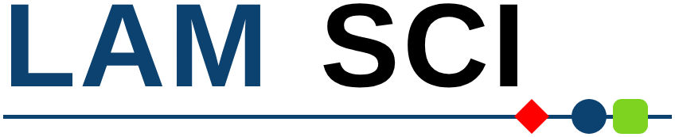

| 품목 | HTML | PPT | 번역(MD) |
|---|---|---|---|
| 스티렌모노머 (SM) | 보고서 열기 | - | 번역본 |
| 아크릴로니트릴 (AN) | 보고서 열기 | PPT | 번역본 |
| 부타디엔 (BD) | 보고서 열기 | PPT | 번역본 |
| 비스페놀A (BPA) | 보고서 열기 | PPT | 번역본 |
| 메틸메타크릴레이트 (MMA) | 보고서 열기 | PPT | 번역본 |
python3 scripts/archive.py build 로 자동 생성됩니다 (직접 수정하지 마세요). 기존 War Room 대시보드는 warroom/ 에 있습니다.